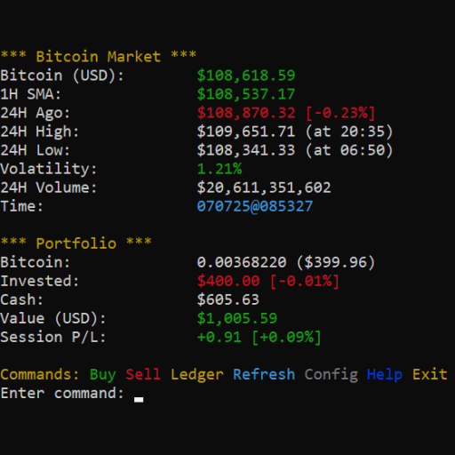

|  |
vBTC v1.5vBTC is a command-line application for simulating Bitcoin trading. It uses a live API to fetch real-time Bitcoin prices and allows users to manage a virtual portfolio with a starting capital of $1000.00. The application features real-time market data, including 24h high/low, volatility, and a 1-Hour Simple Moving Average (SMA), with a 15-minute cache to optimize API calls. It provides a full transaction ledger, configuration options, and color-coded feedback for an intuitive trading experience. Available in a native Go version for cross-platform performance and a PowerShell version for Windows environments. UpdatesLoading updates... DownloadsGO Edition: PC [ x86 / x64 ] Mac [ amd64 / arm64 ] Linux [ x86 / amd64 ] ↳ README PowerShell Edition: [ ps1 / exe ] ↳ README |